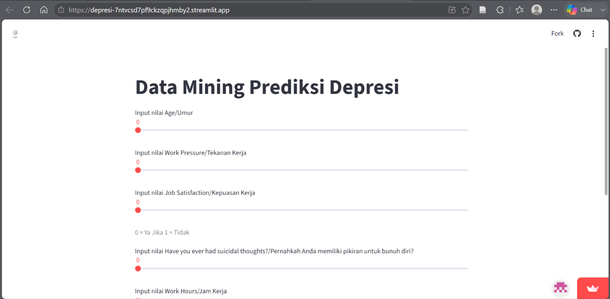
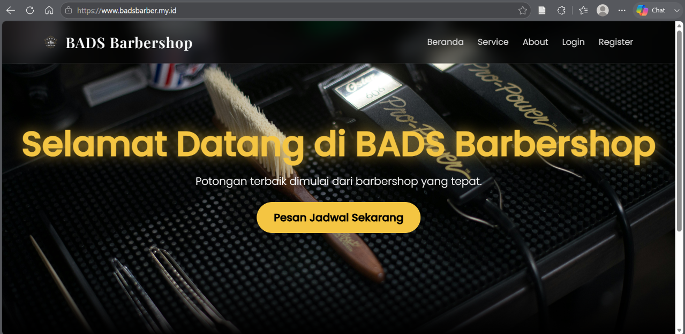
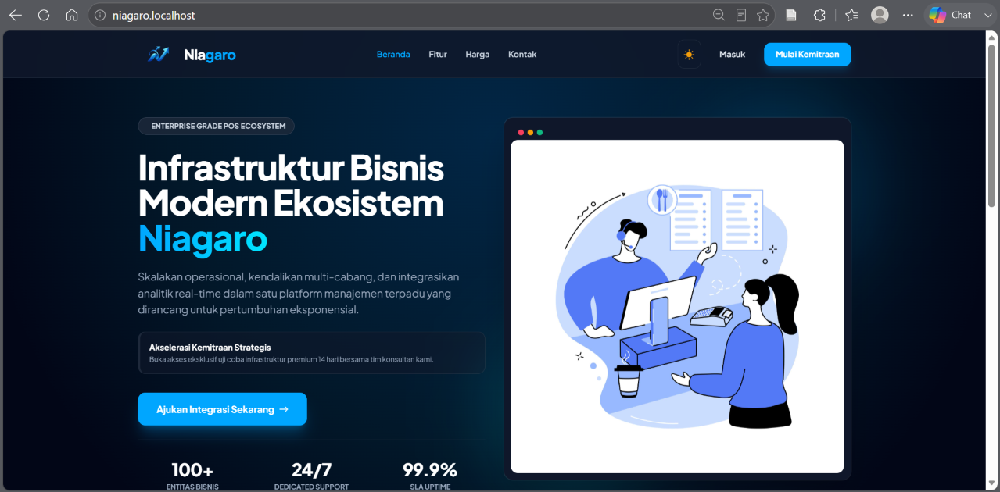
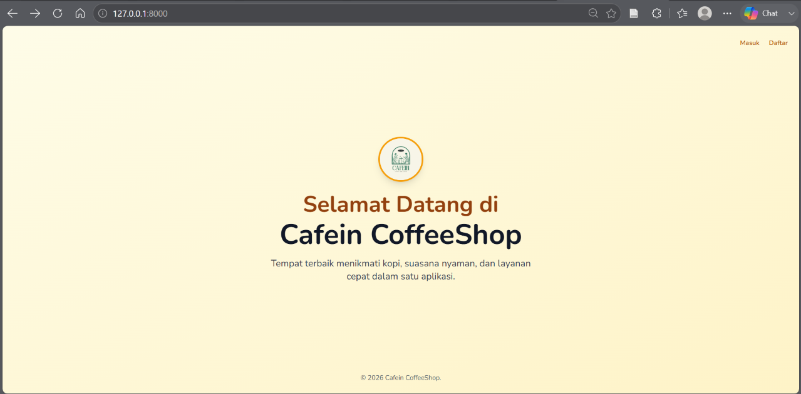
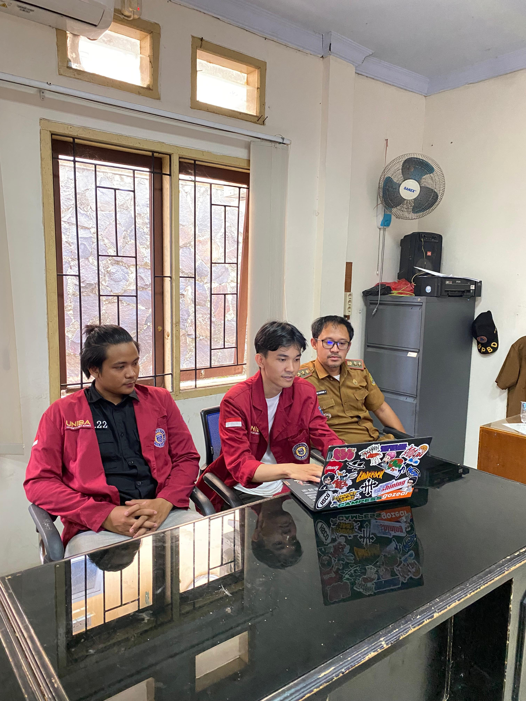
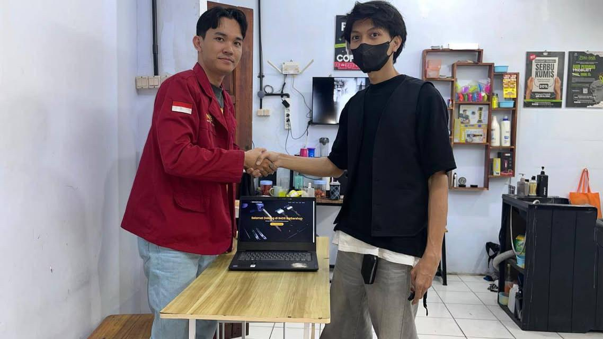
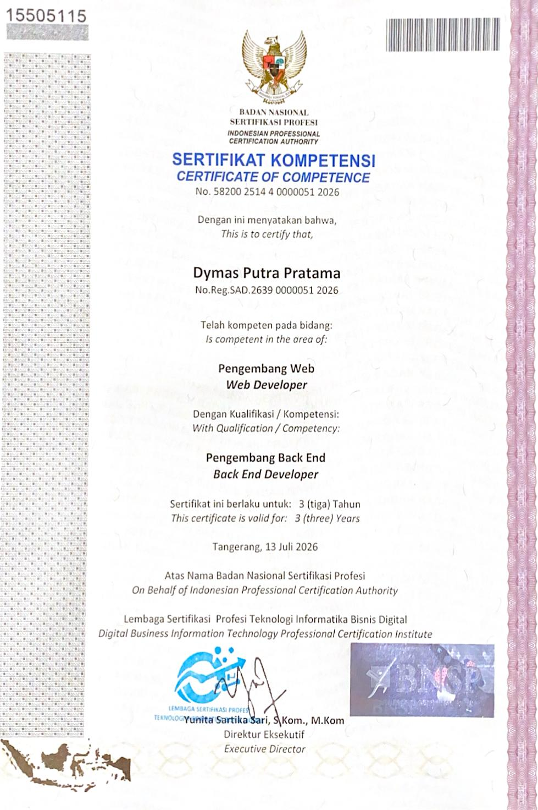
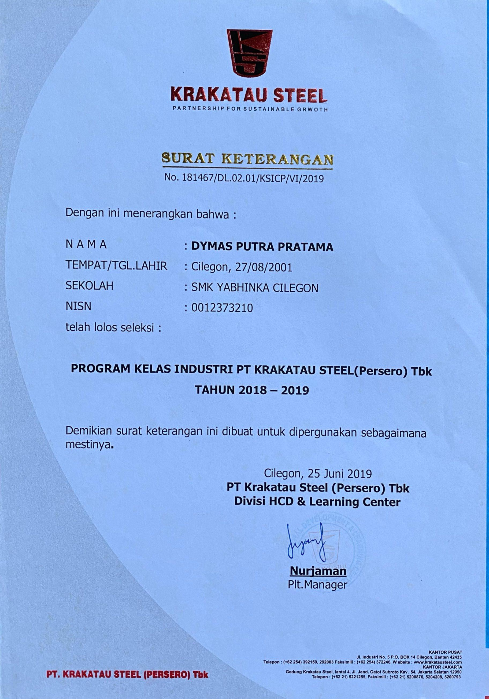
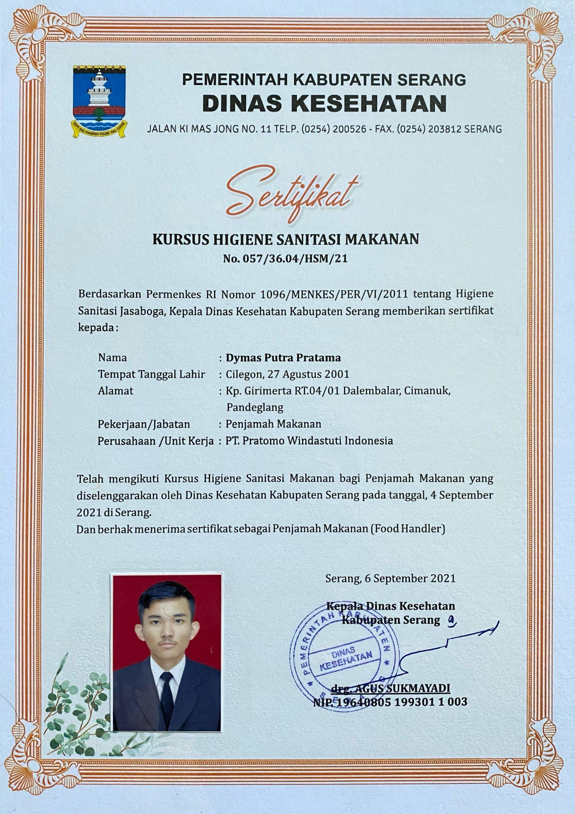

Lulusan S1 Sistem Informasi Universitas Bina Bangsa yang berdedikasi dan berorientasi pada hasil. Terbiasa merancang serta membangun aplikasi berbasis web modern dari sisi Front-End hingga Back-End secara terintegrasi dan responsif.
Pendidikan
S1 Sistem Informasi
Univ. Bina Bangsa
Sertifikasi Profesi
BNSP Web Developer
Nasional
Fokus Keahlian
Full-Stack Web Dev
Front-End & Back-End
Status Kerja
Ready to Work
Open for Opportunities
Eksplorasi hasil karya pengembangan aplikasi web interaktif, sistem ter-deploy, hingga dokumentasi implementasi langsung di lapangan.

Live DemoAplikasi Data Mining berbasis Streamlit untuk memprediksi tingkat risiko depresi seseorang di lingkungan kerja menggunakan algoritma Machine Learning.

Live DemoSistem informasi pemesanan layanan barbershop berbasis web untuk mempermudah pelanggan melakukan reservasi jadwal cukur secara online.

In DevelopmentPlatform SaaS POS berbasis cloud untuk membantu pemilik usaha retail mengelola transaksi kasir, stok barang, serta laporan penjualan harian.

In DevelopmentAplikasi manajemen pemesanan dan kasir interaktif untuk kedai kopi guna mempercepat alur transaksi, manajemen menu, serta pencatatan pesanan.

📸 KegiatanProses analisis kebutuhan pengguna, diskusi perancangan alur data, serta presentasi prototipe aplikasi web bersama para pemangku kepentingan.

📸 KegiatanPenyerahan dan pengujian akhir perangkat lunak siap pakai kepada klien, dilengkapi dengan sosialisasi serta pelatihan pengguna (*user training*).
PT Pratomo Windastuti Indonesia
Menunjukkan dedikasi tinggi, loyalitas, serta menjaga keselamatan dan ritme kerja secara optimal hingga akhir masa kontrak.
PT Paragon Technology and Innovation
Menjalankan operasional lini produksi dengan standar kebersihan, presisi, dan target perusahaan yang tinggi.
PT Grakindo Maju Sukses
Bertanggung jawab atas efisiensi alur kerja produksi dan kerjasama tim dalam area kerja.
Pengembangan teknologi informasi, kemampuan operasional, dan *soft skills* profesional
Membangun website responsif dari sisi Front-End hingga Back-End secara terintegrasi.
Kredensial profesional dan pelatihan kerja yang diakui secara nasional & industri

BNSP (Badan Nasional Sertifikasi Profesi)
Sertifikasi kompetensi nasional bidang pengembangan aplikasi web (Back End Developer).
PT Barata Indonesia (Persero)
Pelatihan teknis dan sertifikasi praktik kerja industri (Ujian Praktik Kejuruan).

PT Krakatau Steel (Persero) Tbk
Program pembinaan dan kesiapan kerja standar manufaktur industri.

Dinas Kesehatan Kab. Serang
Sertifikasi standar keamanan dan kebersihan pengolahan makanan (Food Handler).